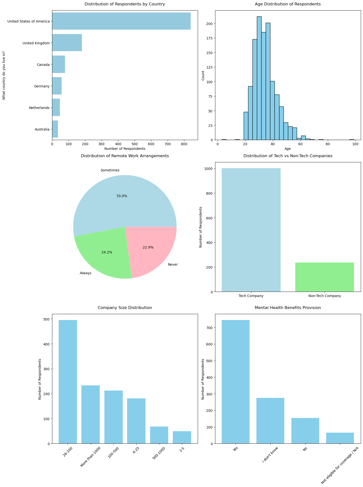
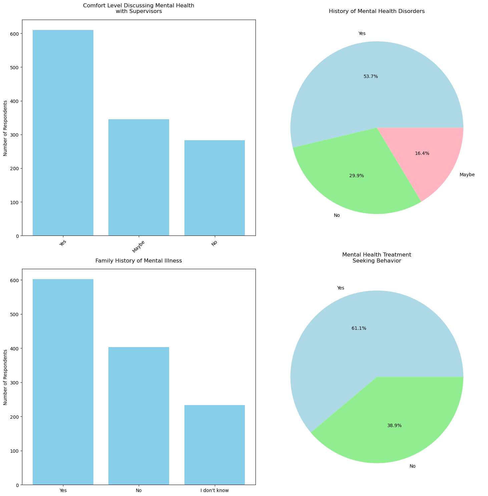

Data Preparation#
This section covers the initial data processing steps including data loading, cleaning, and preliminary analysis. Navigate: Next (Model Development)
#Mental health classification
import pandas as pd
import numpy as np
df = pd.read_csv('mental_health.csv')
print(df.head(5))
Are you self-employed? \
0 0
1 0
2 0
3 1
4 0
How many employees does your company or organization have? \
0 26-100
1 6-25
2 6-25
3 NaN
4 6-25
Is your employer primarily a tech company/organization? \
0 1.0
1 1.0
2 1.0
3 NaN
4 0.0
Is your primary role within your company related to tech/IT? \
0 NaN
1 NaN
2 NaN
3 NaN
4 1.0
Does your employer provide mental health benefits as part of healthcare coverage? \
0 Not eligible for coverage / N/A
1 No
2 No
3 NaN
4 Yes
Do you know the options for mental health care available under your employer-provided coverage? \
0 NaN
1 Yes
2 NaN
3 NaN
4 Yes
Has your employer ever formally discussed mental health (for example, as part of a wellness campaign or other official communication)? \
0 No
1 Yes
2 No
3 NaN
4 No
Does your employer offer resources to learn more about mental health concerns and options for seeking help? \
0 No
1 Yes
2 No
3 NaN
4 No
Is your anonymity protected if you choose to take advantage of mental health or substance abuse treatment resources provided by your employer? \
0 I don't know
1 Yes
2 I don't know
3 NaN
4 No
If a mental health issue prompted you to request a medical leave from work, asking for that leave would be: \
0 Very easy
1 Somewhat easy
2 Neither easy nor difficult
3 NaN
4 Neither easy nor difficult
... \
0 ...
1 ...
2 ...
3 ...
4 ...
If you have a mental health issue, do you feel that it interferes with your work when being treated effectively? \
0 Not applicable to me
1 Rarely
2 Not applicable to me
3 Sometimes
4 Sometimes
If you have a mental health issue, do you feel that it interferes with your work when NOT being treated effectively? \
0 Not applicable to me
1 Sometimes
2 Not applicable to me
3 Sometimes
4 Sometimes
What is your age? What is your gender? What country do you live in? \
0 39 Male United Kingdom
1 29 male United States of America
2 38 Male United Kingdom
3 43 male United Kingdom
4 43 Female United States of America
What US state or territory do you live in? What country do you work in? \
0 NaN United Kingdom
1 Illinois United States of America
2 NaN United Kingdom
3 NaN United Kingdom
4 Illinois United States of America
What US state or territory do you work in? \
0 NaN
1 Illinois
2 NaN
3 NaN
4 Illinois
Which of the following best describes your work position? \
0 Back-end Developer
1 Back-end Developer|Front-end Developer
2 Back-end Developer
3 Supervisor/Team Lead
4 Executive Leadership|Supervisor/Team Lead|Dev ...
Do you work remotely?
0 Sometimes
1 Never
2 Always
3 Sometimes
4 Sometimes
[5 rows x 63 columns]
#Preprocessing
import pandas as pd
import numpy as np
from sklearn.impute import SimpleImputer
class Missing:
def __init__(self, features, counts):
self.features = features
self.counts = counts
def missing_feature(self, feature_type):
print(f"\nMissing {feature_type} Features:")
for feature, count in zip(self.features, self.counts):
print(f"{feature}: {count} missing values")
# Read the dataset
df = pd.read_csv('mental_health.csv')
# Analyze missing values in numeric columns
features_list = [col for col in df.columns if df[col].dtype != "object" and df[col].isna().sum() > 0]
features_count = [df[col].isna().sum() for col in df.columns if df[col].isna().sum() > 0 and df[col].dtype != "object"]
missing = Missing(features_list, features_count)
missing.missing_feature("Numeric")
# Analyze missing values in non-numeric columns
features_list = [col for col in df.columns if df[col].dtype == "object" and df[col].isna().sum() > 0]
features_count = [df[col].isna().sum() for col in df.columns if df[col].isna().sum() > 0 and df[col].dtype == "object"]
missing = Missing(features_list, features_count)
missing.missing_feature("Non-Numeric")
# Drop features with more than 60% missing values
dropped_feat = [col for col in df.columns if df[col].isna().sum() >= 0.60 * df.shape[0]]
df.drop(labels=dropped_feat, axis=1, inplace=True)
print("\nNumber of features dropped: ", len(dropped_feat))
print("Features dropped:", dropped_feat)
# Clean specific columns using SimpleImputer
num_col = ['Is your employer primarily a tech company/organization?', 'What is your gender?']
for col in num_col:
if col in df.columns:
# Create a copy of the column's values
values = df[col].values
# Reshape properly for SimpleImputer
reshaped_values = values.reshape(-1, 1)
# Create and fit the imputer
smpl_num_imp = SimpleImputer(missing_values=np.nan, strategy='most_frequent')
# Transform the values
imputed_values = smpl_num_imp.fit_transform(reshaped_values)
# Assign back to dataframe
df[col] = imputed_values.ravel()
# Impute remaining missing values using Simple Imputer
smpl_imp = SimpleImputer(missing_values=np.nan, strategy='most_frequent')
df_imputed = pd.DataFrame(
smpl_imp.fit_transform(df),
columns=df.columns,
index=df.index
)
df = df_imputed.astype(df.dtypes.to_dict())
# Keep only countries with response > 20
countries = [country for country, value in df['What country do you live in?'].value_counts().items()
if value > 20]
df = df[df['What country do you live in?'].isin(countries)]
print("\nFinal dataset shape:", df.shape)
print("\nValue counts for countries:")
print(df['What country do you live in?'].value_counts())
# Save the cleaned dataset
df.to_csv('mental_health_cleaned_general.csv', index=False)
# Display some basic statistics
print("\nBasic statistics of the cleaned dataset:")
print(df.describe(include='all').T)
Missing Numeric Features:
Is your employer primarily a tech company/organization?: 287 missing values
Is your primary role within your company related to tech/IT?: 1170 missing values
Do you have medical coverage (private insurance or state-provided) which includes treatment of mental health issues?: 1146 missing values
Missing Non-Numeric Features:
How many employees does your company or organization have?: 287 missing values
Does your employer provide mental health benefits as part of healthcare coverage?: 287 missing values
Do you know the options for mental health care available under your employer-provided coverage?: 420 missing values
Has your employer ever formally discussed mental health (for example, as part of a wellness campaign or other official communication)?: 287 missing values
Does your employer offer resources to learn more about mental health concerns and options for seeking help?: 287 missing values
Is your anonymity protected if you choose to take advantage of mental health or substance abuse treatment resources provided by your employer?: 287 missing values
If a mental health issue prompted you to request a medical leave from work, asking for that leave would be:: 287 missing values
Do you think that discussing a mental health disorder with your employer would have negative consequences?: 287 missing values
Do you think that discussing a physical health issue with your employer would have negative consequences?: 287 missing values
Would you feel comfortable discussing a mental health disorder with your coworkers?: 287 missing values
Would you feel comfortable discussing a mental health disorder with your direct supervisor(s)?: 287 missing values
Do you feel that your employer takes mental health as seriously as physical health?: 287 missing values
Have you heard of or observed negative consequences for co-workers who have been open about mental health issues in your workplace?: 287 missing values
Do you know local or online resources to seek help for a mental health disorder?: 1146 missing values
If you have been diagnosed or treated for a mental health disorder, do you ever reveal this to clients or business contacts?: 1146 missing values
If you have revealed a mental health issue to a client or business contact, do you believe this has impacted you negatively?: 1289 missing values
If you have been diagnosed or treated for a mental health disorder, do you ever reveal this to coworkers or employees?: 1146 missing values
If you have revealed a mental health issue to a coworker or employee, do you believe this has impacted you negatively?: 1146 missing values
Do you believe your productivity is ever affected by a mental health issue?: 1146 missing values
If yes, what percentage of your work time (time performing primary or secondary job functions) is affected by a mental health issue?: 1229 missing values
Have your previous employers provided mental health benefits?: 169 missing values
Were you aware of the options for mental health care provided by your previous employers?: 169 missing values
Did your previous employers ever formally discuss mental health (as part of a wellness campaign or other official communication)?: 169 missing values
Did your previous employers provide resources to learn more about mental health issues and how to seek help?: 169 missing values
Was your anonymity protected if you chose to take advantage of mental health or substance abuse treatment resources with previous employers?: 169 missing values
Do you think that discussing a mental health disorder with previous employers would have negative consequences?: 169 missing values
Do you think that discussing a physical health issue with previous employers would have negative consequences?: 169 missing values
Would you have been willing to discuss a mental health issue with your previous co-workers?: 169 missing values
Would you have been willing to discuss a mental health issue with your direct supervisor(s)?: 169 missing values
Did you feel that your previous employers took mental health as seriously as physical health?: 169 missing values
Did you hear of or observe negative consequences for co-workers with mental health issues in your previous workplaces?: 169 missing values
Why or why not?: 338 missing values
Why or why not?.1: 307 missing values
Have you observed or experienced an unsupportive or badly handled response to a mental health issue in your current or previous workplace?: 89 missing values
Have your observations of how another individual who discussed a mental health disorder made you less likely to reveal a mental health issue yourself in your current workplace?: 776 missing values
If yes, what condition(s) have you been diagnosed with?: 865 missing values
If maybe, what condition(s) do you believe you have?: 1111 missing values
If so, what condition(s) were you diagnosed with?: 722 missing values
What is your gender?: 3 missing values
What US state or territory do you live in?: 593 missing values
What US state or territory do you work in?: 582 missing values
Number of features dropped: 11
Features dropped: ['Is your primary role within your company related to tech/IT?', 'Do you have medical coverage (private insurance or state-provided) which includes treatment of \xa0mental health issues?', 'Do you know local or online resources to seek help for a mental health disorder?', 'If you have been diagnosed or treated for a mental health disorder, do you ever reveal this to clients or business contacts?', 'If you have revealed a mental health issue to a client or business contact, do you believe this has impacted you negatively?', 'If you have been diagnosed or treated for a mental health disorder, do you ever reveal this to coworkers or employees?', 'If you have revealed a mental health issue to a coworker or employee, do you believe this has impacted you negatively?', 'Do you believe your productivity is ever affected by a mental health issue?', 'If yes, what percentage of your work time (time performing primary or secondary job functions) is affected by a mental health issue?', 'If yes, what condition(s) have you been diagnosed with?', 'If maybe, what condition(s) do you believe you have?']
Final dataset shape: (1239, 52)
Value counts for countries:
What country do you live in?
United States of America 840
United Kingdom 180
Canada 78
Germany 58
Netherlands 48
Australia 35
Name: count, dtype: int64
Basic statistics of the cleaned dataset:
count unique \
Are you self-employed? 1239.0 NaN
How many employees does your company or organiz... 1239 6
Is your employer primarily a tech company/organ... 1239.0 NaN
Does your employer provide mental health benefi... 1239 4
Do you know the options for mental health care ... 1239 3
Has your employer ever formally discussed menta... 1239 3
Does your employer offer resources to learn mor... 1239 3
Is your anonymity protected if you choose to ta... 1239 3
If a mental health issue prompted you to reques... 1239 6
Do you think that discussing a mental health di... 1239 3
Do you think that discussing a physical health ... 1239 3
Would you feel comfortable discussing a mental ... 1239 3
Would you feel comfortable discussing a mental ... 1239 3
Do you feel that your employer takes mental hea... 1239 3
Have you heard of or observed negative conseque... 1239 2
Do you have previous employers? 1239.0 NaN
Have your previous employers provided mental he... 1239 4
Were you aware of the options for mental health... 1239 4
Did your previous employers ever formally discu... 1239 4
Did your previous employers provide resources t... 1239 3
Was your anonymity protected if you chose to ta... 1239 4
Do you think that discussing a mental health di... 1239 4
Do you think that discussing a physical health ... 1239 3
Would you have been willing to discuss a mental... 1239 3
Would you have been willing to discuss a mental... 1239 4
Did you feel that your previous employers took ... 1239 4
Did you hear of or observe negative consequence... 1239 3
Would you be willing to bring up a physical hea... 1239 3
Why or why not? 1239 946
Would you bring up a mental health issue with a... 1239 3
Why or why not?.1 1239 949
Do you feel that being identified as a person w... 1239 5
Do you think that team members/co-workers would... 1239 5
How willing would you be to share with friends ... 1239 6
Have you observed or experienced an unsupportiv... 1239 4
Have your observations of how another individua... 1239 3
Do you have a family history of mental illness? 1239 3
Have you had a mental health disorder in the past? 1239 3
Do you currently have a mental health disorder? 1239 3
Have you been diagnosed with a mental health co... 1239 2
If so, what condition(s) were you diagnosed with? 1239 105
Have you ever sought treatment for a mental hea... 1239.0 NaN
If you have a mental health issue, do you feel ... 1239 5
If you have a mental health issue, do you feel ... 1239 5
What is your age? 1239.0 NaN
What is your gender? 1239 67
What country do you live in? 1239 6
What US state or territory do you live in? 1239 47
What country do you work in? 1239 10
What US state or territory do you work in? 1239 48
Which of the following best describes your work... 1239 237
Do you work remotely? 1239 3
top \
Are you self-employed? NaN
How many employees does your company or organiz... 26-100
Is your employer primarily a tech company/organ... NaN
Does your employer provide mental health benefi... Yes
Do you know the options for mental health care ... No
Has your employer ever formally discussed menta... No
Does your employer offer resources to learn mor... No
Is your anonymity protected if you choose to ta... I don't know
If a mental health issue prompted you to reques... Somewhat easy
Do you think that discussing a mental health di... Maybe
Do you think that discussing a physical health ... No
Would you feel comfortable discussing a mental ... Maybe
Would you feel comfortable discussing a mental ... Yes
Do you feel that your employer takes mental hea... I don't know
Have you heard of or observed negative conseque... No
Do you have previous employers? NaN
Have your previous employers provided mental he... Some did
Were you aware of the options for mental health... N/A (not currently aware)
Did your previous employers ever formally discu... None did
Did your previous employers provide resources t... None did
Was your anonymity protected if you chose to ta... I don't know
Do you think that discussing a mental health di... Some of them
Do you think that discussing a physical health ... Some of them
Would you have been willing to discuss a mental... Some of my previous employers
Would you have been willing to discuss a mental... Some of my previous employers
Did you feel that your previous employers took ... None did
Did you hear of or observe negative consequence... None of them
Would you be willing to bring up a physical hea... Maybe
Why or why not? Fear of discrimination
Would you bring up a mental health issue with a... No
Why or why not?.1 Stigma
Do you feel that being identified as a person w... Maybe
Do you think that team members/co-workers would... Maybe
How willing would you be to share with friends ... Somewhat open
Have you observed or experienced an unsupportiv... No
Have your observations of how another individua... Yes
Do you have a family history of mental illness? Yes
Have you had a mental health disorder in the past? Yes
Do you currently have a mental health disorder? Yes
Have you been diagnosed with a mental health co... Yes
If so, what condition(s) were you diagnosed with? Mood Disorder (Depression, Bipolar Disorder, etc)
Have you ever sought treatment for a mental hea... NaN
If you have a mental health issue, do you feel ... Not applicable to me
If you have a mental health issue, do you feel ... Often
What is your age? NaN
What is your gender? Male
What country do you live in? United States of America
What US state or territory do you live in? California
What country do you work in? United States of America
What US state or territory do you work in? California
Which of the following best describes your work... Back-end Developer
Do you work remotely? Sometimes
freq mean \
Are you self-employed? NaN 0.187248
How many employees does your company or organiz... 495 NaN
Is your employer primarily a tech company/organ... NaN 0.808717
Does your employer provide mental health benefi... 745 NaN
Do you know the options for mental health care ... 631 NaN
Has your employer ever formally discussed menta... 941 NaN
Does your employer offer resources to learn mor... 671 NaN
Is your anonymity protected if you choose to ta... 884 NaN
If a mental health issue prompted you to reques... 474 NaN
Do you think that discussing a mental health di... 660 NaN
Do you think that discussing a physical health ... 961 NaN
Would you feel comfortable discussing a mental ... 664 NaN
Would you feel comfortable discussing a mental ... 610 NaN
Do you feel that your employer takes mental hea... 668 NaN
Have you heard of or observed negative conseque... 1153 NaN
Do you have previous employers? NaN 0.887006
Have your previous employers provided mental he... 507 NaN
Were you aware of the options for mental health... 612 NaN
Did your previous employers ever formally discu... 895 NaN
Did your previous employers provide resources t... 845 NaN
Was your anonymity protected if you chose to ta... 894 NaN
Do you think that discussing a mental health di... 689 NaN
Do you think that discussing a physical health ... 692 NaN
Would you have been willing to discuss a mental... 783 NaN
Would you have been willing to discuss a mental... 717 NaN
Did you feel that your previous employers took ... 534 NaN
Did you hear of or observe negative consequence... 785 NaN
Would you be willing to bring up a physical hea... 555 NaN
Why or why not? 288 NaN
Would you bring up a mental health issue with a... 790 NaN
Why or why not?.1 264 NaN
Do you feel that being identified as a person w... 508 NaN
Do you think that team members/co-workers would... 515 NaN
How willing would you be to share with friends ... 561 NaN
Have you observed or experienced an unsupportiv... 557 NaN
Have your observations of how another individua... 883 NaN
Do you have a family history of mental illness? 603 NaN
Have you had a mental health disorder in the past? 665 NaN
Do you currently have a mental health disorder? 528 NaN
Have you been diagnosed with a mental health co... 650 NaN
If so, what condition(s) were you diagnosed with? 764 NaN
Have you ever sought treatment for a mental hea... NaN 0.610977
If you have a mental health issue, do you feel ... 466 NaN
If you have a mental health issue, do you feel ... 483 NaN
What is your age? NaN 34.576271
What is your gender? 526 NaN
What country do you live in? 840 NaN
What US state or territory do you live in? 529 NaN
What country do you work in? 844 NaN
What US state or territory do you work in? 535 NaN
Which of the following best describes your work... 220 NaN
Do you work remotely? 657 NaN
std min 25% \
Are you self-employed? 0.390268 0.0 0.0
How many employees does your company or organiz... NaN NaN NaN
Is your employer primarily a tech company/organ... 0.39347 0.0 1.0
Does your employer provide mental health benefi... NaN NaN NaN
Do you know the options for mental health care ... NaN NaN NaN
Has your employer ever formally discussed menta... NaN NaN NaN
Does your employer offer resources to learn mor... NaN NaN NaN
Is your anonymity protected if you choose to ta... NaN NaN NaN
If a mental health issue prompted you to reques... NaN NaN NaN
Do you think that discussing a mental health di... NaN NaN NaN
Do you think that discussing a physical health ... NaN NaN NaN
Would you feel comfortable discussing a mental ... NaN NaN NaN
Would you feel comfortable discussing a mental ... NaN NaN NaN
Do you feel that your employer takes mental hea... NaN NaN NaN
Have you heard of or observed negative conseque... NaN NaN NaN
Do you have previous employers? 0.316714 0.0 1.0
Have your previous employers provided mental he... NaN NaN NaN
Were you aware of the options for mental health... NaN NaN NaN
Did your previous employers ever formally discu... NaN NaN NaN
Did your previous employers provide resources t... NaN NaN NaN
Was your anonymity protected if you chose to ta... NaN NaN NaN
Do you think that discussing a mental health di... NaN NaN NaN
Do you think that discussing a physical health ... NaN NaN NaN
Would you have been willing to discuss a mental... NaN NaN NaN
Would you have been willing to discuss a mental... NaN NaN NaN
Did you feel that your previous employers took ... NaN NaN NaN
Did you hear of or observe negative consequence... NaN NaN NaN
Would you be willing to bring up a physical hea... NaN NaN NaN
Why or why not? NaN NaN NaN
Would you bring up a mental health issue with a... NaN NaN NaN
Why or why not?.1 NaN NaN NaN
Do you feel that being identified as a person w... NaN NaN NaN
Do you think that team members/co-workers would... NaN NaN NaN
How willing would you be to share with friends ... NaN NaN NaN
Have you observed or experienced an unsupportiv... NaN NaN NaN
Have your observations of how another individua... NaN NaN NaN
Do you have a family history of mental illness? NaN NaN NaN
Have you had a mental health disorder in the past? NaN NaN NaN
Do you currently have a mental health disorder? NaN NaN NaN
Have you been diagnosed with a mental health co... NaN NaN NaN
If so, what condition(s) were you diagnosed with? NaN NaN NaN
Have you ever sought treatment for a mental hea... 0.487726 0.0 0.0
If you have a mental health issue, do you feel ... NaN NaN NaN
If you have a mental health issue, do you feel ... NaN NaN NaN
What is your age? 11.833885 3.0 28.0
What is your gender? NaN NaN NaN
What country do you live in? NaN NaN NaN
What US state or territory do you live in? NaN NaN NaN
What country do you work in? NaN NaN NaN
What US state or territory do you work in? NaN NaN NaN
Which of the following best describes your work... NaN NaN NaN
Do you work remotely? NaN NaN NaN
50% 75% max
Are you self-employed? 0.0 0.0 1.0
How many employees does your company or organiz... NaN NaN NaN
Is your employer primarily a tech company/organ... 1.0 1.0 1.0
Does your employer provide mental health benefi... NaN NaN NaN
Do you know the options for mental health care ... NaN NaN NaN
Has your employer ever formally discussed menta... NaN NaN NaN
Does your employer offer resources to learn mor... NaN NaN NaN
Is your anonymity protected if you choose to ta... NaN NaN NaN
If a mental health issue prompted you to reques... NaN NaN NaN
Do you think that discussing a mental health di... NaN NaN NaN
Do you think that discussing a physical health ... NaN NaN NaN
Would you feel comfortable discussing a mental ... NaN NaN NaN
Would you feel comfortable discussing a mental ... NaN NaN NaN
Do you feel that your employer takes mental hea... NaN NaN NaN
Have you heard of or observed negative conseque... NaN NaN NaN
Do you have previous employers? 1.0 1.0 1.0
Have your previous employers provided mental he... NaN NaN NaN
Were you aware of the options for mental health... NaN NaN NaN
Did your previous employers ever formally discu... NaN NaN NaN
Did your previous employers provide resources t... NaN NaN NaN
Was your anonymity protected if you chose to ta... NaN NaN NaN
Do you think that discussing a mental health di... NaN NaN NaN
Do you think that discussing a physical health ... NaN NaN NaN
Would you have been willing to discuss a mental... NaN NaN NaN
Would you have been willing to discuss a mental... NaN NaN NaN
Did you feel that your previous employers took ... NaN NaN NaN
Did you hear of or observe negative consequence... NaN NaN NaN
Would you be willing to bring up a physical hea... NaN NaN NaN
Why or why not? NaN NaN NaN
Would you bring up a mental health issue with a... NaN NaN NaN
Why or why not?.1 NaN NaN NaN
Do you feel that being identified as a person w... NaN NaN NaN
Do you think that team members/co-workers would... NaN NaN NaN
How willing would you be to share with friends ... NaN NaN NaN
Have you observed or experienced an unsupportiv... NaN NaN NaN
Have your observations of how another individua... NaN NaN NaN
Do you have a family history of mental illness? NaN NaN NaN
Have you had a mental health disorder in the past? NaN NaN NaN
Do you currently have a mental health disorder? NaN NaN NaN
Have you been diagnosed with a mental health co... NaN NaN NaN
If so, what condition(s) were you diagnosed with? NaN NaN NaN
Have you ever sought treatment for a mental hea... 1.0 1.0 1.0
If you have a mental health issue, do you feel ... NaN NaN NaN
If you have a mental health issue, do you feel ... NaN NaN NaN
What is your age? 33.0 39.0 323.0
What is your gender? NaN NaN NaN
What country do you live in? NaN NaN NaN
What US state or territory do you live in? NaN NaN NaN
What country do you work in? NaN NaN NaN
What US state or territory do you work in? NaN NaN NaN
Which of the following best describes your work... NaN NaN NaN
Do you work remotely? NaN NaN NaN
import pandas as pd
import matplotlib.pyplot as plt
import seaborn as sns
# Read the cleaned data
df = pd.read_csv('mental_health_cleaned_general.csv')
# Create figure for first set of visualizations
fig = plt.figure(figsize=(15, 20))
# 1. Country Distribution
plt.subplot(3, 2, 1)
country_counts = df['What country do you live in?'].value_counts()
sns.barplot(x=country_counts.values, y=country_counts.index, color='skyblue')
plt.title('Distribution of Respondents by Country', fontsize=12, pad=15)
plt.xlabel('Number of Respondents')
# 2. Age Distribution
plt.subplot(3, 2, 2)
df['What is your age?'] = df['What is your age?'].astype(float)
# Remove outlier age of 323
df = df[df['What is your age?'] < 100]
plt.hist(df['What is your age?'], bins=30, color='skyblue', edgecolor='black')
plt.title('Age Distribution of Respondents', fontsize=12, pad=15)
plt.xlabel('Age')
plt.ylabel('Count')
# 3. Remote Work Distribution
plt.subplot(3, 2, 3)
remote_counts = df['Do you work remotely?'].value_counts()
plt.pie(remote_counts.values, labels=remote_counts.index, autopct='%1.1f%%', colors=['lightblue', 'lightgreen', 'lightpink'])
plt.title('Distribution of Remote Work Arrangements', fontsize=12, pad=15)
# 4. Tech Company vs Non-Tech Company
plt.subplot(3, 2, 4)
tech_counts = df['Is your employer primarily a tech company/organization?'].value_counts()
plt.bar(['Tech Company', 'Non-Tech Company'], tech_counts.values, color=['lightblue', 'lightgreen'])
plt.title('Distribution of Tech vs Non-Tech Companies', fontsize=12, pad=15)
plt.ylabel('Number of Respondents')
# 5. Company Size Distribution
plt.subplot(3, 2, 5)
size_counts = df['How many employees does your company or organization have?'].value_counts()
plt.bar(size_counts.index, size_counts.values, color='skyblue')
plt.title('Company Size Distribution', fontsize=12, pad=15)
plt.xticks(rotation=45)
plt.ylabel('Number of Respondents')
# 6. Mental Health Benefits Provision
plt.subplot(3, 2, 6)
benefits_counts = df['Does your employer provide mental health benefits as part of healthcare coverage?'].value_counts()
plt.bar(benefits_counts.index, benefits_counts.values, color='skyblue')
plt.title('Mental Health Benefits Provision', fontsize=12, pad=15)
plt.xticks(rotation=45)
plt.ylabel('Number of Respondents')
plt.tight_layout()
plt.show()
# Create figure for second set of visualizations
fig = plt.figure(figsize=(15, 15))
# 7. Comfort Level with Supervisors
plt.subplot(2, 2, 1)
comfort_sup = df['Would you feel comfortable discussing a mental health disorder with your direct supervisor(s)?'].value_counts()
plt.bar(comfort_sup.index, comfort_sup.values, color='skyblue')
plt.title('Comfort Level Discussing Mental Health\nwith Supervisors', fontsize=12, pad=15)
plt.xticks(rotation=45)
plt.ylabel('Number of Respondents')
# 8. Previous Mental Health History
plt.subplot(2, 2, 2)
history = df['Have you had a mental health disorder in the past?'].value_counts()
plt.pie(history.values, labels=history.index, autopct='%1.1f%%', colors=['lightblue', 'lightgreen', 'lightpink'])
plt.title('History of Mental Health Disorders', fontsize=12, pad=15)
# 9. Family History of Mental Illness
plt.subplot(2, 2, 3)
family_history = df['Do you have a family history of mental illness?'].value_counts()
plt.bar(family_history.index, family_history.values, color='skyblue')
plt.title('Family History of Mental Illness', fontsize=12, pad=15)
plt.ylabel('Number of Respondents')
# 10. Treatment Seeking Behavior
plt.subplot(2, 2, 4)
treatment = df['Have you ever sought treatment for a mental health issue from a mental health professional?'].map({0: 'No', 1: 'Yes'}).value_counts()
plt.pie(treatment.values, labels=treatment.index, autopct='%1.1f%%', colors=['lightblue', 'lightgreen'])
plt.title('Mental Health Treatment\nSeeking Behavior', fontsize=12, pad=15)
plt.tight_layout()
plt.show()
# Save the figures
plt.savefig('mental_health_survey_analysis.png')


<Figure size 640x480 with 0 Axes>
import sqlite3
try:
# Create a new database
conn = sqlite3.connect('mental_health_final.db')
print("Database 'mental_health_final.db' created successfully!")
# Close the connection
conn.close()
except sqlite3.Error as e:
print(f"Error creating database: {e}")
Database 'mental_health_final.db' created successfully!
#Normalize DB into 3NF
import sqlite3
import pandas as pd
# Read the cleaned data
df = pd.read_csv('mental_health_cleaned_general.csv')
try:
# Create a new database connection
conn = sqlite3.connect('mental_health_final.db')
cursor = conn.cursor()
# Create Employees table (Main entity)
cursor.execute('''
CREATE TABLE IF NOT EXISTS employees (
employee_id INTEGER PRIMARY KEY AUTOINCREMENT,
age INTEGER,
gender TEXT,
country TEXT,
state TEXT,
is_self_employed INTEGER
)
''')
# Create Employment table
cursor.execute('''
CREATE TABLE IF NOT EXISTS employment (
employment_id INTEGER PRIMARY KEY AUTOINCREMENT,
employee_id INTEGER,
company_size TEXT,
is_tech_company INTEGER,
work_remotely TEXT,
FOREIGN KEY (employee_id) REFERENCES employees(employee_id)
)
''')
# Create Mental Health Benefits table
cursor.execute('''
CREATE TABLE IF NOT EXISTS mental_health_benefits (
benefit_id INTEGER PRIMARY KEY AUTOINCREMENT,
employee_id INTEGER,
has_mental_health_benefits TEXT,
knows_benefits_options TEXT,
mental_health_resources TEXT,
leave_request_ease TEXT,
FOREIGN KEY (employee_id) REFERENCES employees(employee_id)
)
''')
# Create Mental Health History table
cursor.execute('''
CREATE TABLE IF NOT EXISTS mental_health_history (
history_id INTEGER PRIMARY KEY AUTOINCREMENT,
employee_id INTEGER,
family_history TEXT,
past_disorder TEXT,
current_disorder TEXT,
sought_treatment INTEGER,
FOREIGN KEY (employee_id) REFERENCES employees(employee_id)
)
''')
# Create Workplace Communication table
cursor.execute('''
CREATE TABLE IF NOT EXISTS workplace_communication (
communication_id INTEGER PRIMARY KEY AUTOINCREMENT,
employee_id INTEGER,
discuss_with_supervisor TEXT,
discuss_with_coworkers TEXT,
observed_negative_consequences TEXT,
interferes_with_work TEXT,
FOREIGN KEY (employee_id) REFERENCES employees(employee_id)
)
''')
# Insert data into Employees table
for _, row in df.iterrows():
cursor.execute('''
INSERT INTO employees (age, gender, country, state, is_self_employed)
VALUES (?, ?, ?, ?, ?)
''', (
row['What is your age?'],
row['What is your gender?'],
row['What country do you live in?'],
row['What US state or territory do you live in?'],
row['Are you self-employed?']
))
employee_id = cursor.lastrowid
# Insert into Employment table
cursor.execute('''
INSERT INTO employment (employee_id, company_size, is_tech_company, work_remotely)
VALUES (?, ?, ?, ?)
''', (
employee_id,
row['How many employees does your company or organization have?'],
row['Is your employer primarily a tech company/organization?'],
row['Do you work remotely?']
))
# Insert into Mental Health Benefits table
cursor.execute('''
INSERT INTO mental_health_benefits (employee_id, has_mental_health_benefits,
knows_benefits_options, mental_health_resources, leave_request_ease)
VALUES (?, ?, ?, ?, ?)
''', (
employee_id,
row['Does your employer provide mental health benefits as part of healthcare coverage?'],
row['Do you know the options for mental health care available under your employer-provided coverage?'],
row['Does your employer offer resources to learn more about mental health concerns and options for seeking help?'],
row['If a mental health issue prompted you to request a medical leave from work, asking for that leave would be:']
))
# Insert into Mental Health History table
cursor.execute('''
INSERT INTO mental_health_history (employee_id, family_history, past_disorder,
current_disorder, sought_treatment)
VALUES (?, ?, ?, ?, ?)
''', (
employee_id,
row['Do you have a family history of mental illness?'],
row['Have you had a mental health disorder in the past?'],
row['Do you currently have a mental health disorder?'],
row['Have you ever sought treatment for a mental health issue from a mental health professional?']
))
# Insert into Workplace Communication table
cursor.execute('''
INSERT INTO workplace_communication (employee_id, discuss_with_supervisor,
discuss_with_coworkers, observed_negative_consequences, interferes_with_work)
VALUES (?, ?, ?, ?, ?)
''', (
employee_id,
row['Would you feel comfortable discussing a mental health disorder with your direct supervisor(s)?'],
row['Would you feel comfortable discussing a mental health disorder with your coworkers?'],
row['Have you heard of or observed negative consequences for co-workers who have been open about mental health issues in your workplace?'],
row['If you have a mental health issue, do you feel that it interferes with your work when being treated effectively?']
))
# Commit the changes
conn.commit()
print("Database normalized and data inserted successfully!")
except sqlite3.Error as e:
print(f"An error occurred: {e}")
if conn:
conn.rollback()
finally:
if conn:
conn.close()
print("Database connection closed.")
Database normalized and data inserted successfully!
Database connection closed.
#Using SQL join statements
import sqlite3
import pandas as pd
# Connect to the database
conn = sqlite3.connect('mental_health_final.db')
# 1. Employee Demographics and Employment Details
demographics_query = """
SELECT
e.employee_id,
e.age,
e.gender,
e.country,
e.state,
e.is_self_employed,
emp.company_size,
emp.is_tech_company,
emp.work_remotely
FROM employees e
LEFT JOIN employment emp ON e.employee_id = emp.employee_id
"""
df_demographics = pd.read_sql_query(demographics_query, conn)
print("\nDemographics and Employment Data:")
print(df_demographics.head())
print(f"Total records: {len(df_demographics)}")
# 2. Mental Health Benefits and Resources
benefits_query = """
SELECT
e.employee_id,
e.country,
mhb.has_mental_health_benefits,
mhb.knows_benefits_options,
mhb.mental_health_resources,
mhb.leave_request_ease
FROM employees e
LEFT JOIN mental_health_benefits mhb ON e.employee_id = mhb.employee_id
"""
df_benefits = pd.read_sql_query(benefits_query, conn)
print("\nMental Health Benefits Data:")
print(df_benefits.head())
print(f"Total records: {len(df_benefits)}")
# 3. Mental Health History and Work Impact
health_history_query = """
SELECT
e.employee_id,
e.age,
e.gender,
mhh.family_history,
mhh.past_disorder,
mhh.current_disorder,
mhh.sought_treatment,
wc.interferes_with_work
FROM employees e
LEFT JOIN mental_health_history mhh ON e.employee_id = mhh.employee_id
LEFT JOIN workplace_communication wc ON e.employee_id = wc.employee_id
"""
df_health_history = pd.read_sql_query(health_history_query, conn)
print("\nMental Health History and Impact Data:")
print(df_health_history.head())
print(f"Total records: {len(df_health_history)}")
# 4. Workplace Communication and Environment
workplace_query = """
SELECT
e.employee_id,
e.is_self_employed,
emp.is_tech_company,
wc.discuss_with_supervisor,
wc.discuss_with_coworkers,
wc.observed_negative_consequences,
mhb.leave_request_ease
FROM employees e
LEFT JOIN employment emp ON e.employee_id = emp.employee_id
LEFT JOIN workplace_communication wc ON e.employee_id = wc.employee_id
LEFT JOIN mental_health_benefits mhb ON e.employee_id = mhb.employee_id
"""
df_workplace = pd.read_sql_query(workplace_query, conn)
print("\nWorkplace Communication Data:")
print(df_workplace.head())
print(f"Total records: {len(df_workplace)}")
# 5. Comprehensive Analysis (All Tables)
comprehensive_query = """
SELECT
e.employee_id,
e.age,
e.gender,
e.country,
emp.company_size,
emp.is_tech_company,
emp.work_remotely,
mhb.has_mental_health_benefits,
mhb.mental_health_resources,
mhh.family_history,
mhh.current_disorder,
mhh.sought_treatment,
wc.discuss_with_supervisor,
wc.observed_negative_consequences
FROM employees e
LEFT JOIN employment emp ON e.employee_id = emp.employee_id
LEFT JOIN mental_health_benefits mhb ON e.employee_id = mhb.employee_id
LEFT JOIN mental_health_history mhh ON e.employee_id = mhh.employee_id
LEFT JOIN workplace_communication wc ON e.employee_id = wc.employee_id
"""
df_comprehensive = pd.read_sql_query(comprehensive_query, conn)
print("\nComprehensive Analysis Data:")
print(df_comprehensive.head())
print(f"Total records: {len(df_comprehensive)}")
# Close the connection
conn.close()
Demographics and Employment Data:
employee_id age gender country state \
0 1 39 Male United Kingdom California
1 2 29 male United States of America Illinois
2 3 38 Male United Kingdom California
3 4 43 male United Kingdom California
4 5 43 Female United States of America Illinois
is_self_employed company_size is_tech_company work_remotely
0 0 26-100 1 Sometimes
1 0 6-25 1 Never
2 0 6-25 1 Always
3 1 26-100 1 Sometimes
4 0 6-25 0 Sometimes
Total records: 1239
Mental Health Benefits Data:
employee_id country has_mental_health_benefits \
0 1 United Kingdom Not eligible for coverage / N/A
1 2 United States of America No
2 3 United Kingdom No
3 4 United Kingdom Yes
4 5 United States of America Yes
knows_benefits_options mental_health_resources leave_request_ease
0 No No Very easy
1 Yes Yes Somewhat easy
2 No No Neither easy nor difficult
3 No No Somewhat easy
4 Yes No Neither easy nor difficult
Total records: 1239
Mental Health History and Impact Data:
employee_id age gender family_history past_disorder current_disorder \
0 1 39 Male No Yes No
1 2 29 male Yes Yes Yes
2 3 38 Male No Maybe No
3 4 43 male No Yes Yes
4 5 43 Female Yes Yes Yes
sought_treatment interferes_with_work
0 0 Not applicable to me
1 1 Rarely
2 1 Not applicable to me
3 1 Sometimes
4 1 Sometimes
Total records: 1239
Workplace Communication Data:
employee_id is_self_employed is_tech_company discuss_with_supervisor \
0 1 0 1 Yes
1 2 0 1 Yes
2 3 0 1 Maybe
3 4 1 1 Yes
4 5 0 0 No
discuss_with_coworkers observed_negative_consequences \
0 Maybe No
1 Maybe No
2 Maybe No
3 Maybe No
4 Maybe No
leave_request_ease
0 Very easy
1 Somewhat easy
2 Neither easy nor difficult
3 Somewhat easy
4 Neither easy nor difficult
Total records: 1239
Comprehensive Analysis Data:
employee_id age gender country company_size \
0 1 39 Male United Kingdom 26-100
1 2 29 male United States of America 6-25
2 3 38 Male United Kingdom 6-25
3 4 43 male United Kingdom 26-100
4 5 43 Female United States of America 6-25
is_tech_company work_remotely has_mental_health_benefits \
0 1 Sometimes Not eligible for coverage / N/A
1 1 Never No
2 1 Always No
3 1 Sometimes Yes
4 0 Sometimes Yes
mental_health_resources family_history current_disorder sought_treatment \
0 No No No 0
1 Yes Yes Yes 1
2 No No No 1
3 No No Yes 1
4 No Yes Yes 1
discuss_with_supervisor observed_negative_consequences
0 Yes No
1 Yes No
2 Maybe No
3 Yes No
4 No No
Total records: 1239